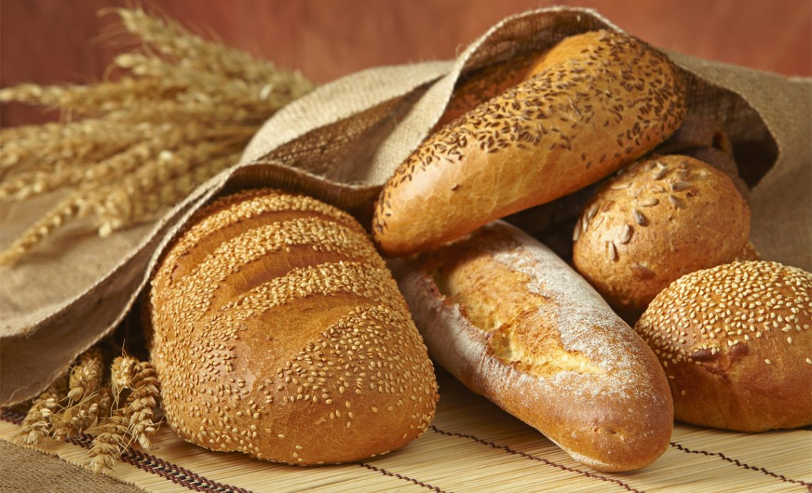
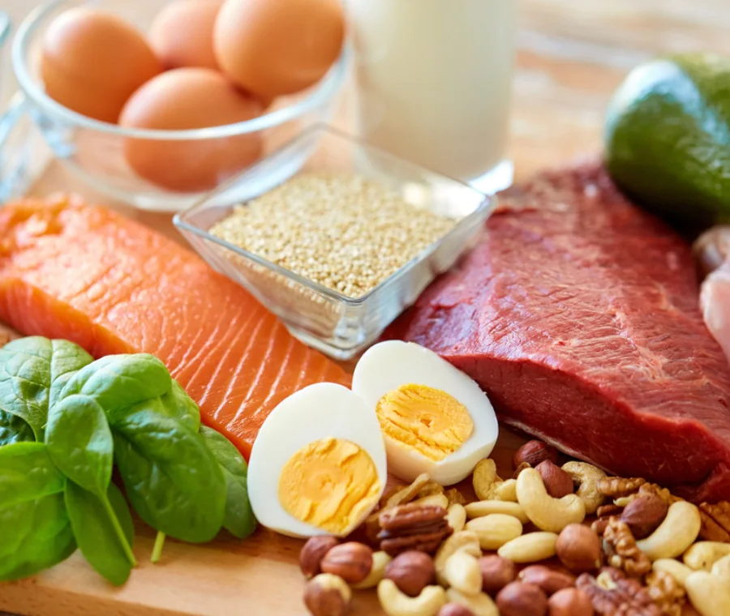
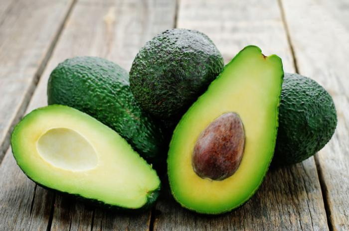
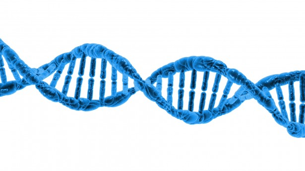

La piramide alimentare
 La piramide alimentare è un grafico ideato dal Dipartimento Statunitense dell'Agricoltura (USDA) nel 1992 per illustrare i consigli ed i suggerimenti che dovrebbero essere seguiti per mantenere un'alimentazione completa ed equilibrata. Deve essere interpretato come un insieme di indicazioni volte a organizzare la propria alimentazione e non va considerato come schema alimentare con finalità dimagranti.
La piramide è divisa orizzontalmente, dalla base verso il vertice, in diversi settori: ciascuno contiene vari tipi di alimenti e la dimensione del settore è indicativa della frequenza/quantità relativa con cui dovrebbero essere consumati per un'alimentazione completa ed equilibrata.
Alla base della piramide ci sono i cibi da consumare con maggiore frequenza e in quantità maggiore, al vertice della piramide quelli da assumere con moderazione. Nel tempo, si sono susseguite diverse versioni grafiche di piramide alimentare che hanno modificato la collocazione degli alimenti nei vari settori, e, di conseguenza, la loro frequenza di consumo. Ne sono un esempio la carne rossa, di cui è stato ridotto il consumo a non più di una volta a settimana.
La piramide alimentare è un grafico ideato dal Dipartimento Statunitense dell'Agricoltura (USDA) nel 1992 per illustrare i consigli ed i suggerimenti che dovrebbero essere seguiti per mantenere un'alimentazione completa ed equilibrata. Deve essere interpretato come un insieme di indicazioni volte a organizzare la propria alimentazione e non va considerato come schema alimentare con finalità dimagranti.
La piramide è divisa orizzontalmente, dalla base verso il vertice, in diversi settori: ciascuno contiene vari tipi di alimenti e la dimensione del settore è indicativa della frequenza/quantità relativa con cui dovrebbero essere consumati per un'alimentazione completa ed equilibrata.
Alla base della piramide ci sono i cibi da consumare con maggiore frequenza e in quantità maggiore, al vertice della piramide quelli da assumere con moderazione. Nel tempo, si sono susseguite diverse versioni grafiche di piramide alimentare che hanno modificato la collocazione degli alimenti nei vari settori, e, di conseguenza, la loro frequenza di consumo. Ne sono un esempio la carne rossa, di cui è stato ridotto il consumo a non più di una volta a settimana.
I Carboidrati
 I Carboidrati , detti anche glucidi o idrati di carbonio, sono una classe di composti organici contenenti idrogeno e ossigeno. Questi sono le principali molecole di riserva energetica che costituiscono anche le componenti di struttura delle cellule.
Sono i composti organici più abbondanti in natura. I carboidrati più semplici sono gli zuccheri; tra questi assume particolare importanza il glucosio, coinvolto nei processi di fermentazione e di respirazione cellulare.
Le proteine

Le proteine sono composti quaternari formati da: carbonio, idrogeno, ossigeno e azoto, e alcune volte anche da zolfo e fosforo.
Sono macromolecole formate dall’unione di molte unità elementari che sono gli amminoacidi.
Gli amminoacidi sono formati da un gruppo amminico (NH2) e un gruppo carbossilico (COOH).
Gli amminoacidi essenziali in tutto sono 20, nei bambini sono 10 e negli adulti sono 8.
I grassi

I grassi o lipidi sono composti ternari (C,H,O) Carbonio, Idrogeno, Ossigeno.
Queste sono molecole molto grandi formate dall’unione di molecole più piccole. La differenza con gli zuccheri consiste nel numero di atomi di carbonio che nei grassi è maggiore o uguale a 50.
I grassi hanno 9 calorie e quindi più del doppio rispetto ai carboidrati (o zuccheri) e alle proteine.
La loro funzione è quella di immagazzinare energia e di fornircela nel momento in cui ne abbiamo bisogno.
Esistono diversi tipi di grassi:
-i grassi saturi sono tipici dei prodotti di origine animale (formaggi, burro, panna, latticini, carni grasse, insaccati), e causano l'aumento del colesterolo nel sangue;
Il consumo deve essere moderato
-I grassi insaturi si trovano negli oli vegetali, in noci e nocciole, nei cereali, nelle olive e nel pesce; hanno effetti positivi sul cuore e sulla circolazione, se assunti nelle giuste dosi.
Gli acidi nucleici
 Gli acidi nucleici sono grandi molecole (macromolecole) biologiche, che hanno lo scopo di immagazzinare e trasportare l’informazione genetica, fondamentale per la sintesi di tutte le proteine del nostro organismo. Per via del ruolo chiave nella sopravvivenza e nel corretto sviluppo della vita, gli acidi nucleici si possono trovare in tutti gli organismi, dai più semplici ai più complessi.
Il sito è stato creato il: 06/02/2023 dall'alunno Alessandro Dobinda.